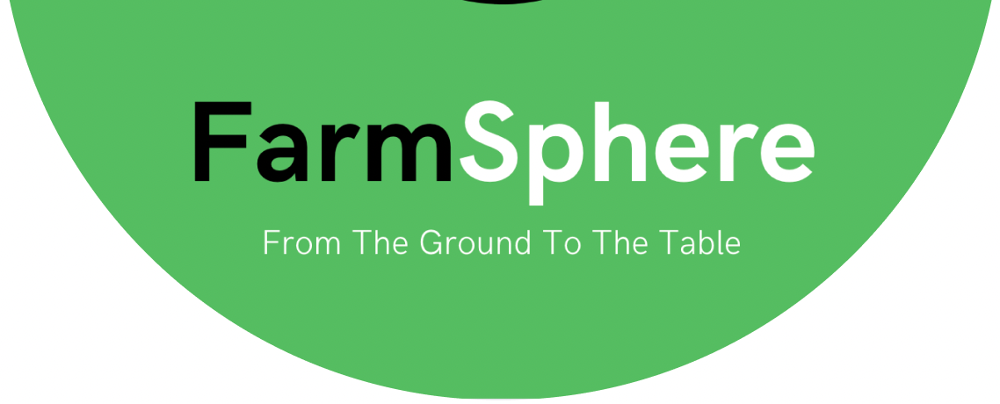

<div class="w-screen h-screen flex flex-col relative farmerLayout">
  <farmer-navbar (toggle)="toggleMenu()" />

  <div class="flex-1 overflow-y-scroll">
    <router-outlet />
  </div>

  <client-footer />

  <div class="w-screen h-screen bg-[#000000a6] absolute top-0 right-0 menuContainer z-50" *ngIf="isMenuOpen">
    <div class="w-[calc(100%-4rem)] h-full shadow-lg absolute bg-white top-0 right-0 menu">
      

      <div class="h-auto w-full flex flex-col mt-16">

        <div class="flex items-center gap-4 px-8 py-3" *ngFor="let navigation of navigations"
          (click)="toggleMenu(navigation.name)">
          <i class="bi {{navigation.icon}}"></i>

          <a routerLink="{{navigation.url}}" routerLinkActive="active" class="text-3xl">{{navigation.name}}</a>
        </div>

        <button (click)="toggleMenu()"
          class="w-[calc(100%-4rem)] bg-green-600 focus:bg-green-700 mx-auto mt-12 text-white p-4 rounded-full">
          Close
        </button>
      </div>
    </div>
  </div>
</div>